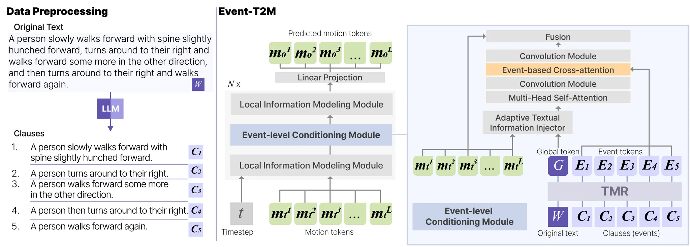

Ph.D. Student @ Korea University
Exploring the intersection of Computer Graphics, Motion Synthesis, and Deep Learning
I am a Graphics Researcher and Ph.D. Student at Korea University. My research focuses on understanding and imitating human behaviors through Computer Graphics and Deep Learning.
Doctor of Philosophy - Ph.D. Student, Computer Science
Research Interest: Computer Graphics
Bachelor, Software Convergence
GPA: 4.04/4.5
Acquired Skills: Deep Learning, Natural Language Processing (NLP)
Intern · On-site
NLP Researcher · Full-time
Pangyo, South Korea · On-site
SIGGRAPH Asia 2025 Conference Paper Oral Presentation
A novel framework for symbolic cognitive reasoning enabling virtual agents to make natural head rotation decisions in embodied environments.
App. No: 10-2025-0149262
App. No: 10-2025-0155836
App. No: 10-2022-0155485
Joint research with NCSOFT. Developing high-fidelity motion synthesis models capable of generating complex interactions from natural language descriptions.
Joint research with ETRI. Developing agent technology that self-improves by recognizing uncertainty and asking questions to resolve ambiguity.
KCGS 2025
KSC 2022
KCC 2022
SW Festival · Kyung Hee University
Khuthon 2021 · Kyung Hee University
Khuthon 2021 · Kyung Hee University
I'm always open to discussing new research collaborations, interesting projects, or opportunities in graphics and motion synthesis.